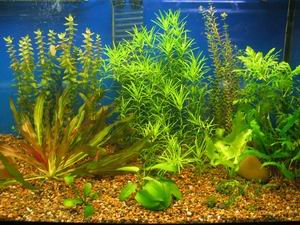
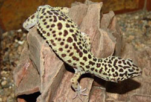

Всё про аквариум
Если вы любитель подводного мира или террариумных животных и вы никогда не содержали аквариум или террариум, на нашем сайте у вас есть возможность узнать о тех, кто этим успешно занимался или занимается.
Во всем мире люди разделяют страсть к экзотике подводного и животного мира. Немало из них, в домашних аквариумах, террариумах пытаются держать и разводить рыб, беспозвоночных, пресмыкающихся, водные растения. В настоящее время растет интерес к животным аквариума и террариума, и все больше и больше людей приобщается к этому занятию, потому что содержать аквариум или террариум очень интересное занятие, которое вознаграждает затраченные усилия и украшает ваш дом оазисом живой природы..

Обычно у новичка желающего приобщиться к этому увлекательному занятию, с самого начала возникают сложности, но не стоит расстраиваться. Во-первых, есть и хорошая сторона - наблюдать за рыбками, как они плавают по аквариуму, собирают корм, или как ящерицы с удовольствием греются под лампой, ползают по террариуму, кстати, их можно и потрогать, ведь у них довольно приятная на ощупь кожа. Во-вторых, существует наш сайт, в котором просто и понятно рассказывается о том, как содержать аквариум и террариум с самыми различными обитателями.

Как решить, какой вид аквариума или вид террариума нужен вам, на чем остановить свой выбор? Все это узнаете здесь. Прочитав раздел "Всё о аквариумах", вы сможете выбрать между морским и пресноводным аквариумами, получить рекомендации о выборе аквариума, ознакомиться с азами ухода за аквариумом, получить знания об обогреве, освещении, аэрации и фильтрации аквариума. Кроме того, вы сможете построить аквариум по своему вкусу и оборудовать его декоративными элементами.
Хочу отметить раздел "Болезни аквариумных рыб ", потому что он полезен не только для лечения болезней, а для их предупреждения.
Раздел нашего сайта про террариум, будет так же не менее интересен новичку, который собирается содержать экзотических животных. Ознакомившись с разделом, вы будете знать общие моменты содержания террариума, узнаете как сделать террариум самому , а так же каких животных чаще держат в террариуме.